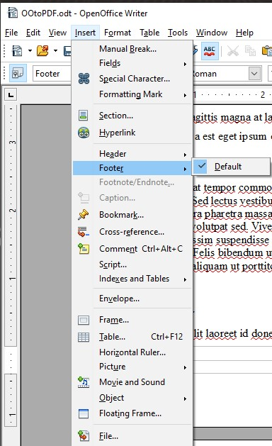
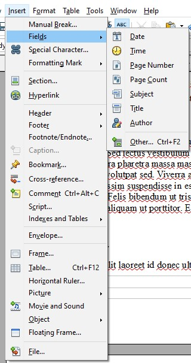

Technique PDF17:Specifying consistent page numbering for PDF documents
Applicability
Tagged PDF documents
This technique is not referenced from any Understanding document.
Description
The objective of this technique is to help users locate themselves in a document by
ensuring that the page numbering displayed in the PDF viewer page controls has the
same page numbering as the document. For example, Adobe Acrobat Pro and Reader display
page numbers in the Page Navigation toolbar. The page number format is specified by
the /PageLabels entry in the Document Catalog.
Many documents use specific page number formats within a document. Commonly, front matter is numbered with lowercase Roman numerals. The main content, starting on the page numbered 1, may actually be the fifth or sixth page in the document. Similarly, appendices may begin with page number 1 plus a prefix of the appendix letter (e.g., "A-1").
Authors should make sure that the page numbering of their converted documents is reflected in any page number displays in their user agent. Consistency in presenting the document's page numbers will help make navigating the document more predictable and understandable.
As an example, if /PageLabels has not been provided to describe the page number formatting, the page numbering
scheme will not be reflected in the Page Navigation toolbar in Adobe Acrobat Pro or
Reader. This toolbar displays the page number in a text box, which users can change
to move to another page. In addition, users can select the arrows to move one page
up or down in the document. The toolbar also displays the relative page number location.
In the image below, the default display indicates the user is on page 12 of 116 pages.
A more direct way of going to a page is to use the shortcut for the View > Page Navigation → Go To Page menu item. On Windows, this shortcut is "Ctrl + Shift + N"; on Mac OS, it is "Cmd + Shift + N". This brings up a dialog box to go to a specific page number.
Examples
Example 1: Editing PDF page number formatting specifications using Adobe Acrobat Pro
This example is shown with Adobe Acrobat Pro. There are other software tools that perform similar functions.
The example document converted from Microsoft Word has 4 pages, numbered i, ii, iii, iv, and 1. This is specified In Word using the Format Page Numbers in the Page Number option in Word's Insert ribbon.
In this document, a new section has been created with page numbering beginning with Arabic numeral 1 on the fourth page of the document. The document was then converted to PDF from Word.
In Adobe Acrobat Pro:
- Select the Organize Pages tool;
- Select the the pages that need their numbering updated;
- Open the context menu and select the Page Labels... option;
- Select the Page Numbering option;
- Use the Begin New Section settings to update the page numbering style.
To correct the page numbers:
- Select the pages to be renumbered
- Access the context menu for the selected pages and select Number Pages
- In the Page Numbering dialog, select the lowercase Roman numeral style and the starting page (1 by default, which is correct in this case)
- Select OK
The following image shows the Page Numbering dialog and selections.
Follow the same process to change the fifth page number to Arabic numeral 1.
The following image shows the correct page numbers for the 5 pages.
This example is shown in operation in the working example of specifying page numbers in a document converted from Word (Word file) and working example of specifying page numbers in a document converted from Word (PDF file).
Example 2: Adding Page Numbers in OpenOffice Writer
To add page numbering in OpenOffice with Writer, the user needs to add a footer from the Insert dropdown.
After inserting the footer, click in the footer then select Insert ← Fields ← Page Number.
Example 3: Specifying page numbers using the /PageLabels entry
The following code fragment illustrates code that is typical for specifying multiple page numbering schemes in a document.
The example below is for a document with pages labeled: i, ii, iii, iv, 1, 2, 3, A-8, A-9, ...
This numbering scheme requires 3 page-label dictionaries (for lowercase Roman, Arabic, and prefixed numbers)
1 0 obj
<< /Type /Catalog
/PageLabels << /Nums [ 0 << /S /r >> % lowercase Roman numerals
4 << /S /D >> % Arabic numerals
7 << /S /D % Arabic numerals with ...
/P (A-) % the prefix "A-"...
/St 8 % starting at page 8
>>
]
>>
...
>>
endobj
Page labels are specified as follows:
-
/Sspecifies the numbering style for page numbers:-
/D- Arabic numerals (1,2,3...) /r- lowercase Roman numerals (i, ii, iii,...)/R- uppercase Roman numerals (I, II, III,...)/A- uppercase letters (A-Z)/a- lowercase letters (a-z)
-
/P(optional) - page number prefix/St(optional) - the value of the first page number in the range (default: 1)
Other sources
No endorsement implied.
- Section 12.4.2 (Page Labels) in PDF 1.7 (ISO 32000-1) (PDF)
- Create and verify PDF accessibility (Acrobat Pro)
Tests
Procedure
-
For every section in the document that uses a different pagination format, check that the page navigation feature uses the same format used on the document pages:
- Select the pages that begin a new pagination format and visually verify that the same format and page number is shown in the page navigation feature.
- Using a screen reader, check that the page number announced in the page navigation feature is the same as the page number announced on the document page.
- Using a tool that is capable of showing the
/PageLabelsentries, open the PDF document and view the entries. - Use a tool that exposes the document through the accessibility API, and verify that the
/PageLabelsentries are specified correctly.
Expected Results
- #1 is true.